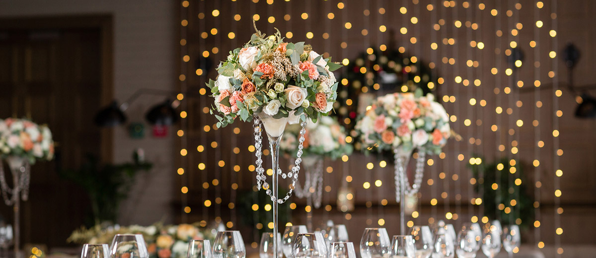

WEDDING ANNIVERSERIES

SOUTHWEST SENSATION
Celebrate your 7th year with your sweetie with a neighborhood barbeque, complete with a Southwestern theme. The 7th year’s theme is copper, so add some antique hardware to your décor to bring some spice to your anniversary party décor. For this look, fill a metal or copper tub with ice and your favorite bottled drinks. For a truly Southwest accent, place a set of faux antlers next to the beverage bucket, and adorn with sprigs from a silk rose arrangement.
LANTERN LOVE
You two have survived your first year together! Whether you made it by the skin of your teeth or it was easy as pie, you definitely want to celebrate with your loved ones. A paper lantern centerpiece will set a laid-back, romantic mood at your one anniversary party. Arrange a paper lantern in the middle of your banquet table, and place an LED light inside to let it glow. Place preserved red roses atop in the shape of a wreath, and sprinkle rose petals around the base for a romantic touch.
CUTE AS COTTON
Year Two’s theme is cotton, so why not indulge your charming, rustic side? Utilize cotton boll branches to fashion simply bouquets to be displayed on your beverage table or any other decorated area. For an adorable detail, use a zinc bucket to hold your cotton. Seamlessly bring the look together by wrapping the top of bucket in twine, and tying it into a bow.
TABLE OF PLENTY
Celebrate the bounty of your marriage with Year Four’s theme—fruit! This mantel or table decoration is easy to assemble, and is perfect for a cheerful, vibrant gathering of friends and family. For this anniversary idea, begin with cylinder glass vases of different shapes and sizes. Fill with your favorite fresh and preserved fruits, such as apples,oranges, lemons, pears and pomegranates. Finish off this festive look with a long strand of wired ribbon, curved to loosely wrap your vases.